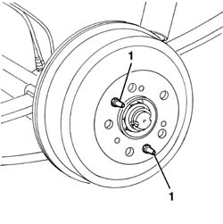
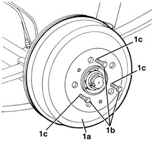
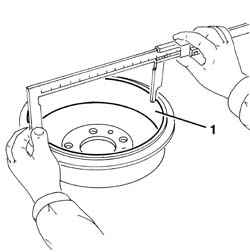

3320B30 LH OR RH REAR BRAKE DRUM (ONE) R R
- Path
- Procedures > 33 BRAKING SYSTEM > 3320 DRUM BRAKES > 3320B REAR DRUM BRAKES > 3320B30 LH OR RH REAR BRAKE DRUM (ONE) R R
- Kind
- repair procedure (removal / refitting; the operation number is the code)
- Applies to
- all engines; all production periods
- Interactive page
- https://sloeber94.github.io/elrnDB-fDct/en/#/244001092
Applies to: all engines; all production periods
 Removing
Removing
 Refitting
Refitting- Remove the rear wheel.
1. Undo the bolts.

Applies to: all engines; all production periods
1. Remove the brake drum (1a). If necessary, to facilitate the removal of the brake drum due to rust on the contact surfaces, use three 10 x 1.25 bolts (1b) that should be inserted in the special openings (1c).
- If the operation proves difficult, loosen the handbrake cable, insert a screwdriver in one of the openings for fastening the wheel and position this opening in line with the handbrake lever. At this stage push towards the vehicle to compress the shoes to release the drum. Then restore the correct handbrake adjustment.

Applies to: all engines; all production periods
1. The maximum permitted internal diameter for the brake drum after wear is given below; if the figure is higher than this the brake drum should be replaced.
- In the case of deterioration or deep grooves, the surfaces of the brake drum should be skimmed with a turning machine: when the operation is completed the internal diameter of the brake drum should not be higher than the figure given.
 | Subject | Value |
|---|---|---|
. | Rear brake drums | |
- | Drum nominal inner diameter | 254 ÷ 254.3 |
| Subject | Value |
|---|---|---|
. | Rear brake drums | mm |
- | Maximum diameter after skimming | 254.8 |
| Subject | Value |
|---|---|---|
. | Rear brake drums | mm |
- | Maximum permitted diameter after wear | 255.6 |

Applies to: all engines; all production periods
Refitting
Removing- Place the brake drum in position.
- Tighten the bolts.
- Refit the rear wheel.
- Check that the brakes are working.